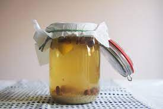

Let er op dat u met andere hoeveelheden kunt werken t.o.v. onderstaand voorbeeld, maar dat de onderlinge verhoudingen ongeveer gelijk moeten blijven. Een goede vuistregel is een verhouding van 1 op 10 (korrels t.o.v. water in gewichtsverhouding) in de zomerperiode en 1 op 8 in de winter. Dit in verband met variatie qua fermentatie als gevolg van verschillen in de temperatuur.
Voor 1 liter nodig: een weckpot of goed te sluiten bokaal en een plastic (metaal tast de kefirkorrels aan!) zeef.